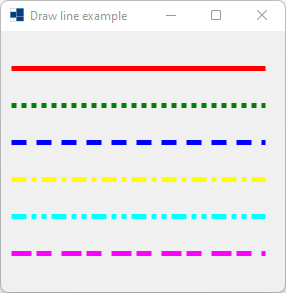
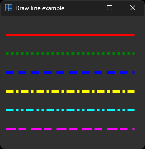
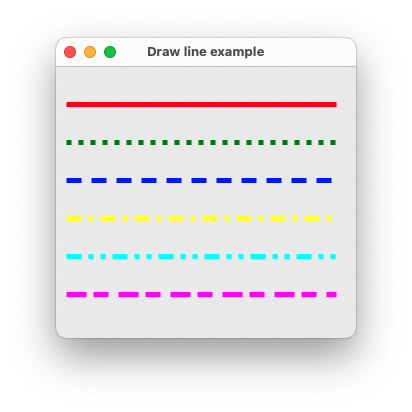
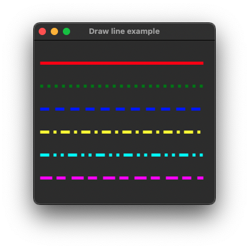
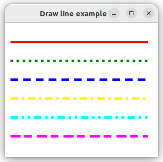
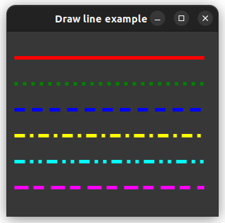

|
xtd
0.2.0
|
draw_line.cpp
shows how to draw line in paint event using xtd::drawing::graphics::draw_line.
- Windows
- 

- macOS
- 

- Gnome
- 

#include <xtd/forms/application>
#include <xtd/forms/form>
using namespace xtd::drawing;
using namespace xtd::forms;
namespace draw_line_example {
public:
form1() {
text("Draw line example");
}
protected:
form::on_paint(e);
e.graphics().draw_line(solid_pen, 10, e.clip_rectangle().height() / 7, e.clip_rectangle().width() - 20, e.clip_rectangle().height() / 7);
dot_pen.dash_style(dash_style::dot);
e.graphics().draw_line(dot_pen, 10, e.clip_rectangle().height() / 7 * 2, e.clip_rectangle().width() - 20, e.clip_rectangle().height() / 7 * 2);
dash_pen.dash_style(dash_style::dash);
e.graphics().draw_line(dash_pen, 10, e.clip_rectangle().height() / 7 * 3, e.clip_rectangle().width() - 20, e.clip_rectangle().height() / 7 * 3);
dash_dot_pen.dash_style(dash_style::dash_dot);
e.graphics().draw_line(dash_dot_pen, 10, e.clip_rectangle().height() / 7 * 4, e.clip_rectangle().width() - 20, e.clip_rectangle().height() / 7 * 4);
dash_dot_dot_pen.dash_style(dash_style::dash_dot_dot);
e.graphics().draw_line(dash_dot_dot_pen, 10, e.clip_rectangle().height() / 7 * 5, e.clip_rectangle().width() - 20, e.clip_rectangle().height() / 7 * 5);
custom_pen.dash_style(dash_style::custom);
custom_pen.dash_pattern({4, 1, 3, 2});
e.graphics().draw_line(custom_pen, 10, e.clip_rectangle().height() / 7 * 6, e.clip_rectangle().width() - 20, e.clip_rectangle().height() / 7 * 6);
}
};
}
auto main()->int {
application::run(draw_line_example::form1 {});
}
static const xtd::drawing::color yellow
Gets a system-defined color that has an ARGB value of 0xFFFFFF00. This field is constant.
Definition: color.h:475
static const xtd::drawing::color green
Gets a system-defined color that has an ARGB value of 0xFF008000. This field is constant.
Definition: color.h:211
static const xtd::drawing::color red
Gets a system-defined color that has an ARGB value of 0xFFFF0000. This field is constant.
Definition: color.h:400
static const xtd::drawing::color blue
Gets a system-defined color that has an ARGB value of 0xFF0000FF. This field is constant.
Definition: color.h:85
static const xtd::drawing::color cyan
Gets a system-defined color that has an ARGB value of 0xFF00FFFF. This field is constant.
Definition: color.h:118
static const xtd::drawing::color magenta
Gets a system-defined color that has an ARGB value of 0xFFFF00FF. This field is constant.
Definition: color.h:295
xtd::forms::style_sheets::control form
The form data allows you to specify the box of a form control.
Definition: form.h:21
@ dash_dot
Specifies a line consisting of a repeating pattern of dash-dot.
@ dash_dot_dot
Specifies a line consisting of a repeating pattern of dash-dot-dot.
@ text
The xtd::forms::status_bar_panel displays text in the standard font.
The xtd::drawing namespace provides access to GDI+ basic graphics functionality. More advanced functi...
Definition: actions_system_images.h:11
The xtd::forms namespace contains classes for creating Windows-based applications that take full adva...
Definition: about_box.h:13
Generated on Sun Oct 1 2023 07:46:00 for xtd by Gammasoft. All rights reserved.